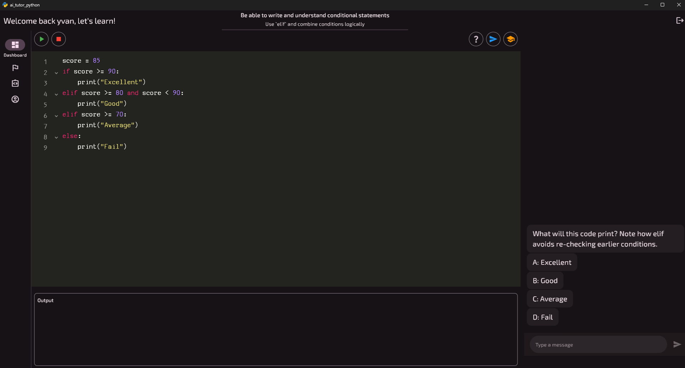

Wat je nodig hebt
Windows 10 of 11, 64-bit. En internet: de tutor en je voortgang staan online.
Python hoef je niet te installeren. Het zit in de app, met turtle, matplotlib, numpy en pandas.
A classroom-focused app that helps students practice Python with guided exercises, instant feedback, and teacher-controlled progress tracking.

Voorlopig alleen voor SMA Arcadia De app werkt nu alleen voor leerlingen van SMA Arcadia. Je meldt je aan met je schoolaccount. Een versie zonder schoolaccount is in voorbereiding (#261 op GitHub).
Versie, datum, grootte en SHA-256: zie alle releases op GitHub.
{{sha256}}
Wil je nagaan of het bestand heel binnenkwam? In PowerShell toont
Get-FileHash python_teacher_install.exe dezelfde SHA-256, in hoofdletters.
Klik op Download voor Windows. Vraagt je browser of je het bestand wil houden? Kies dan Behouden.
Open python_teacher_install.exe uit je map Downloads.
Toont Windows een blauw venster van SmartScreen? Klik op Meer info en dan op Toch uitvoeren.
Windows waarschuwt omdat de app nieuw is en geen digitale handtekening heeft.
De installer is in het Engels. Kies Install for me only en klik op Next tot je Install ziet. Je hebt geen adminrechten nodig: de app wordt alleen voor jou geïnstalleerd.
Laat Launch Python Teacher aangevinkt en klik op Finish. De app start meteen. Later vind je ze in het startmenu als Python Teacher.
Klik op Aanmelden met schoolaccount en meld je aan met je Microsoft-account van school.
Vraagt de app daarna om een API-sleutel? Dan moet je leerkracht je account nog aanzetten. Je hebt zelf geen sleutel nodig. Zeg het je leerkracht en laat de app open: zodra je account aanstaat, ga je vanzelf verder.
Windows 10 of 11, 64-bit. En internet: de tutor en je voortgang staan online.
Python hoef je niet te installeren. Het zit in de app, met turtle, matplotlib, numpy en pandas.
De app werkt zichzelf bij. Is er een nieuwe versie, dan zie je bovenaan in de app een balk. Klik op Bijwerken: de app sluit even en komt terug in de nieuwe versie. Je hoeft niet terug naar deze site.
Zelf kijken? Ga naar Opties → Over en klik op Controleren op updates.
Ga naar Opties → Bugmeldingen, klik op Bug melden… en schrijf wat er misging. Klik op Als bestand bewaren en stuur dat bestand naar je leerkracht.
Heb je een GitHub-account? Klik dan eerst op GitHub verbinden. Daarna zet Op GitHub plaatsen je melding meteen op GitHub.